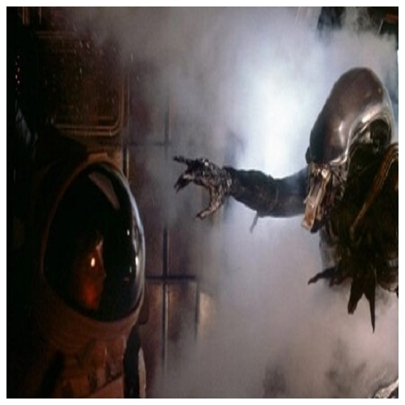

Director: Ridley Scott
Sinopsis: "Alien" es una película de ciencia ficción y terror que sigue a la tripulación de la nave espacial Nostromo, que se encuentra con una forma de vida alienígena mortal después de recibir una señal de socorro de un planeta desconocido.
Reparto Principal: